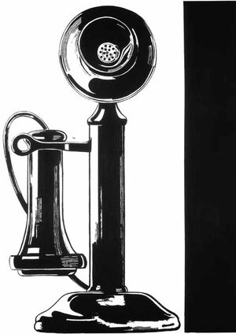

Andy Warhol,1928 – 1987,Pop Art,American,"Andy Warhol (; born Andrew Warhola; August 6, 1928 – February 22, 1987) was an American artist, director and producer who was a leading figure in the visual art movement known as pop art. His works explore the relationship between artistic expression, celebrity culture, and advertising that flourished by the 1960s, and span a variety of media, including painting, silkscreening, photography, film, and sculpture. Some of his best known works include the silkscreen paintings Campbell's Soup Cans (1962) and Marilyn Diptych (1962), the experimental film Chelsea Girls (1966), and the multimedia events known as the Exploding Plastic Inevitable (1966–67).",https://en.wikipedia.org/wiki/Andy_Warhol,181
